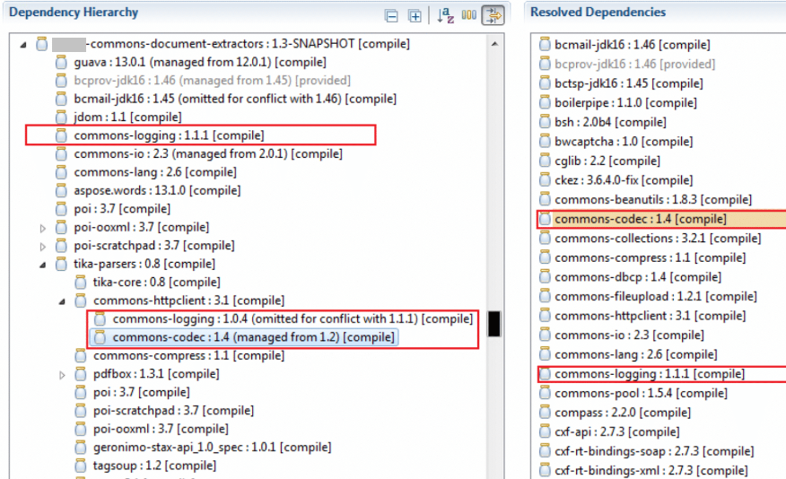

class: center, middle, main-title # Software Engineering Zero-feature release (Part 1) --- ## New or noteworthy - Parliamentary election this week! -- - Project teams are now formed -- - Added links in [sample areas of interest](https://emokymai.vu.lt/mod/page/view.php?id=56872) list -- - Short-term plan - [second delivery](https://emokymai.vu.lt/pluginfile.php/129749/mod_resource/content/1/PSIProjectRequirements2020.pdf): - Next 2 lectures - focus on zero-feature release - Next 2 lectures - focus on project plan - 2nd delivery shortly after that ??? This course starts fast --- ## Before that - Deadline for first delivery is next week - How's it going? ??? - Do you feel you have enough theorethical knowledge to start? - Is it clear what you have to do? --- ## Zero-feature release This... ``` main() { printf("hello, world\n"); } ``` -- ... and more. --- ## In your case - A *deployed* minimal version of your app, e.g.: - One webpage with static content - Mobile app with one "welcome" screen - Command-line tool that prints something to console -- - All team's core technologies are used -- - Development tools agreed upon and set up - At least one automated test exists - CI/CD pipeline exists -- - Infrastructure is operational ??? - Quite a lot to do. Not much "writing code" involved - more like gluing things together. - Parallelize - start from VCS; then build skeleton that runs locally; while also building from end result. --- ## Why? - To save you time (less rework, faster development once everything is set up) -- - To give you more hands-on experience with various tools and practices --- class: middle, center ## Development infrastructure --- ## Integrated development environments - Idea: A developer should accomplish everything in one app/program/environment -- - [What is an IDE?](https://www.redhat.com/en/topics/middleware/what-is-ide) - Software application that helps developers build software -- - What does it integrate? - Source code editor - Local build automation - Debugger - Other tools (plugins) ??? - Editor demo - Code search - Quick editing (autocomplete, multiline operations) - Incremental compilation - Static code analysis, e.g. `Math.max(1, some number)` - Consistent formatting (reformat file) - Takeaway - learn shortcuts - Build automation demo - Run webapp - compiles, builds, runs - Invoke some gradle command (publishToMavenLocal) - Debugger demo - Breakpoints - Inspecting values - Going back - Other tools - VCS client - Terminal - SQL client - Advice - use one IDE with the same settings across the team --- ## Version control systems - Covered last time ??? Did you have a chance to set it up yet? --- ## Code review tools - Idea - Any code that is submitted must be peer-reviewed -- - Same as proof-reading an article -- - Great way to catch problems early, spread knowledge, align style, learn, and teach ??? Some examples: - https://github.com/SolarDesignTool/lyra-host-app/pull/10 - teach - https://github.com/SolarDesignTool/lyra-host-app/pull/11 - find bugs - https://github.com/SolarDesignTool/pv-system-design-service/pull/194 - bounce design ideas ideas - https://github.com/SolarDesignTool/pv-system-design-service/pull/394 - no comments - https://bitbucket.org/atlassian/swagger-request-validator/pull-requests/166/add-akka-http-module/diff - another tool - https://demo.reviewboard.org/r/ - one more tool - Paper: https://ieeexplore.ieee.org/stamp/stamp.jsp?arnumber=7180075 --- ## Build tools: Purpose .center[**Source code**] .center[|] .center[*build and package*] .center[↓] .center[**Some binary artifact**] .center[|] .center[(*deploy*)] .center[↓] .center[**(Software available to end-user)**] --- ## From source to binary package --- ## Build automation tools - **Main goal**: save time and avoid errors -- - Secondary goals - Dependency management - Enforcing process - Repeatable builds -- - Some configuration required - Which compiler version to use? - Where are the sources? - What dependencies are required? - ... -- - Configuration can be *imperative* (steps) or *declarative* (goals) ??? Demo build config: makefile / sh script vs Maven build config --- ## Build config example ```groovy apply plugin: 'java' sourceCompatibility = JavaVersion.VERSION_15 repositories { mavenLocal() } dependencies { implementation 'org.springframework.boot:spring-boot-starter-web:2.2.3' implementation 'com.github.java-json-tools:json-schema-validator:2.2.14' testImplementation 'org.junit.jupiter:junit-jupiter:5.7.0' testRuntime 'com.tngtech.archunit:archunit-junit5-engine:0.14.1' } test { useJUnitPlatform() exclude '**/*IntegrationTest*' } ``` ??? Demo more complete Gradle config --- ## Dependencies example  ??? Demo Gradle dependencies Demo Node config and dependencies --- ## Aside: Dependencies - Difference between libraries and frameworks ??? Libraries plug into your code. Your code plugs into framework. Do not use two frameworks that serve the same purpose Frameworks - upgrade path is more complicated --- ## Static code analysers - Also known as *linters* -- - Idea - Analyze the code *without executing it* to find potential problems -- - Compilers evolve to include checks from linters -- - Linters evolve to include new and more complex checks ??? Demo: - IDEA built-in static analysis - Sonar, Checkstyle, Findbugs --- ## Automated testing tools - Various tools that automate testing activities ??? Demo: JUnit, Postman, Selenium --- ## Key takeaways - Many tools are available - use them to your advantage -- - Main goal behind automation: save time and avoid errors -- - Code reviews is an extremely important practice - take them seriously -- - Declarative configuration is both attractive and popular --- ## Reading assignment Recommended: - [Paper: Characteristics of Useful Code Reviews: An Empirical Study at Microsoft](https://ieeexplore.ieee.org/stamp/stamp.jsp?arnumber=7180075) --- class: middle, center # Questions?